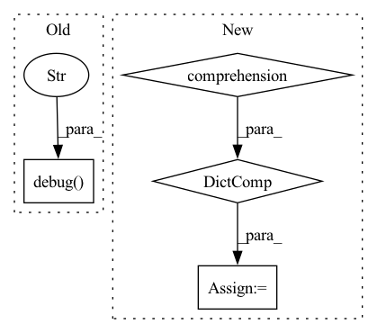

Pattern ID :15777
Before Change
try:
// Run the docker container
logger.debug(
f"Starting docker container with {self._tritonserver_image} device_requests={devices} "
f"volumes={volumes} ports={ports}"
)
self._tritonserver_container = self._docker_client.containers.run(
image=self._tritonserver_image,
device_requests=devices,
volumes=volumes,After Change
// Map ports, use config values but set to server defaults if not
// specified
ports = self.get_ports()
ports = {port_number: port_number for port_number in ports.values()}
try:
self._docker_container: DockerContainer = self._docker_image.run_container(
devices=devices,In pattern: SUPERPATTERN
Frequency: 3
Non-data size: 4
Instances Fragment ID: 53282661
Project Name: triton-inference-server/model_navigator
Commit Name: 5e37049c455ffcf2a5758cc79c4eeee50edeae35
Time: 2022-01-14
Author: pziecina@nvidia.com
File Name: model_navigator/triton/server/server_docker.py
M Class Name: TritonServerDocker
N Class Name: TritonServerDocker
M Method Name: start(1)
N Method Name: start(1)
M Parent Class: TritonServer
N Parent Class: TritonServer
M File Name: model_navigator/triton/server/server_docker.py
N File Name: model_navigator/triton/server/server_docker.py
M Start Line: 62
M End Line: 118
N Start Line: 63
N End Line: 91
Before Change
pod = pods[0]
pod_name = pod.metadata.name
containers = [c.name for c in pod.spec.containers]
logger.debug(
f"Retrieving logs for pod: {pod_name} and container "
f"{containers[0]}"
)
response = self._core_api.read_namespaced_pod_log(
name=pod_name,
namespace=self._namespace,
container=containers[0],After Change
containers = [c.name for c in pod.spec.containers]
init_containers = [c.name for c in pod.spec.init_containers]
container_statuses = {
c.name: c.started or c.restart_count
for c in pod.status.container_statuses
}
container = "default"
if container not in containers:
container = containers[0] Fragment ID: 53282663
Project Name: maiot-io/zenml
Commit Name: 9b6419e73c1602e60190b419907e5cb0939bca29
Time: 2022-05-05
Author: stefan@zenml.io
File Name: src/zenml/integrations/seldon/seldon_client.py
M Class Name: SeldonClient
N Class Name: SeldonClient
M Method Name: get_deployment_logs(4)
N Method Name: get_deployment_logs(4)
M Parent Class:
N Parent Class:
M File Name: src/zenml/integrations/seldon/seldon_client.py
N File Name: src/zenml/integrations/seldon/seldon_client.py
M Start Line: 868
M End Line: 871
N Start Line: 865
N End Line: 886
Before Change
{default_config["parameters"]:
self.model.bounds[default_config["parameters"]]}
logger.debug(f"Adding {rc.__name__} with config {default_config}" )
r = rc(prior_bounds=prior_bounds, **default_config)
self._reparameterisation.add_reparameterisations(r)
self.add_default_reparameterisations()After Change
logger.debug("Getting fallback reparameterisation")
FallbackClass, fallback_kwargs = \
self.get_reparameterisation(self.fallback_reparameterisation)
fallback_kwargs["prior_bounds"] = \
{p: self.model.bounds[p] for p in other_params}
logger.info(
f"Assuming fallback reparameterisation "
f"({FallbackClass.__name__}) for {other_params} with kwargs: "
f"{fallback_kwargs}." Fragment ID: 53282662
Project Name: mj-will/nessai
Commit Name: 9ce0fc34d58fb4da7e1528cee6eca1c257f0af74
Time: 2021-11-30
Author: michaeljw1@googlemail.com
File Name: nessai/proposal/flowproposal.py
M Class Name: FlowProposal
N Class Name: FlowProposal
M Method Name: configure_reparameterisations(2)
N Method Name: configure_reparameterisations(2)
M Parent Class: RejectionProposal
N Parent Class: RejectionProposal
M File Name: nessai/proposal/flowproposal.py
N File Name: nessai/proposal/flowproposal.py
M Start Line: 670
M End Line: 693
N Start Line: 676
N End Line: 708